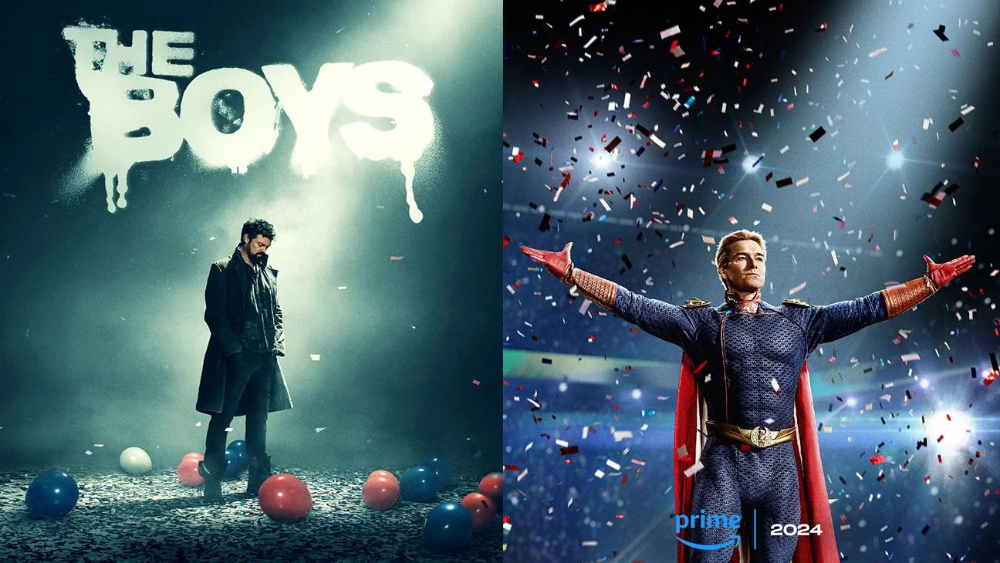

Deadpool & Wolverine estreia em Julho
Deadpool 3 conta com o retorno de Ryan Reynolds no papel do Mercenário Tagarela e, em uma das parcerias mais aguardadas do cinema de herói, contará também com Hugh Jackman reprisando seu papel icônico de Wolverine
Ler mais
PlayStation 2 vendeu 160 milhões de unidades, diz Jim Ryan
Durante uma entrevista em um podcast, Jim Ryan revelou que a posição do PS2 como console mais vendido se mantém mais firme do que nunca, e os competidores ainda terão que suar a camisa para conseguir ultrapassar essa meta.
Ler mais

'The Boys' revela estreia da 4ª temporada
Quarta temporada de 'The Boys' chega à plataforma no dia 13 de junho.O novo ano da série será lançado com três episódios iniciais, recebendo um novo capítulo por semana, às sextas-feiras, até o finale, marcado para acontecer no dia 18 de julho
Ler mais